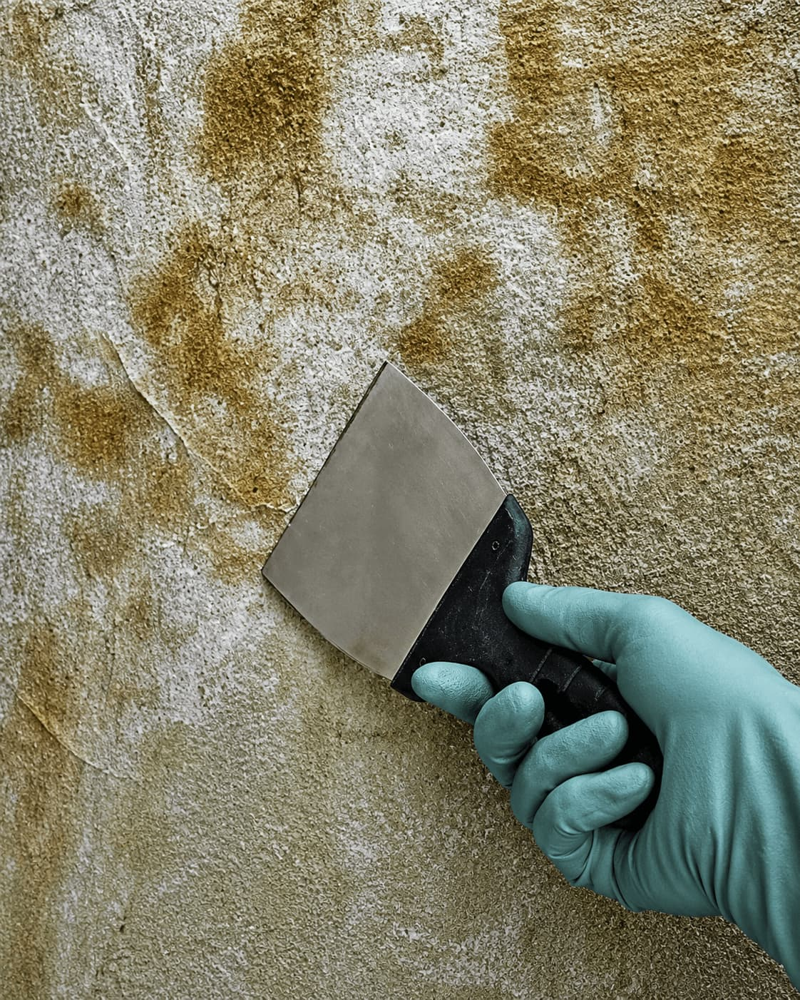

Attic mold concerns
For roof leak history, ventilation issues, sheathing stains, humidity, or insulation-related questions.

Compare independent providers for attic and crawl space mold cleanup requests involving ventilation issues, roof leak history, humidity problems, insulation concerns, wood sheathing stains, basement moisture, or difficult-to-access areas that need professional review.
Provider matching platform
Review provider options
Check scope and terms
MoldPros does not perform work

This path fits homeowners comparing providers for attic staining, crawl space moisture, basement odor, roof leak history, insulation concerns, wood sheathing marks, or ventilation problems that may require professional cleanup planning.
For roof leak history, ventilation issues, sheathing stains, humidity, or insulation-related questions.
For musty odors, vapor issues, standing moisture, poor access, or hidden growth concerns.
For comparing provider explanations around cleanup scope, moisture source, ventilation, and next-step recommendations.
Attic and crawl space mold cleanup fits projects where the affected area is less visible, harder to access, connected to ventilation or moisture problems, or may involve insulation, wood, vapor, drainage, or humidity questions.
When roof leaks, poor ventilation, condensation, humidity, or sheathing marks may be involved.
When musty smells, damp soil, vapor issues, standing moisture, or poor air movement are present.
When providers may need to review insulation, joists, sheathing, framing, or affected materials.
When tight spaces, difficult entry, protective equipment, containment, or specialized cleanup planning matters.

Choose the attic and crawl space category and describe the area, odor, staining, or moisture concern.
Add useful context like roof leak history, ventilation, humidity, insulation, access, ZIP code, timing, and photos if available.
Compare independent provider options and verify cleanup scope, safety process, moisture recommendations, and pricing directly.
MoldPros helps organize the first step, but homeowners remain responsible for checking provider qualifications, access requirements, containment methods, written estimates, insulation or material handling, warranty terms, and final project agreements.
Ask whether the provider holds any license or certification required for your state, city, or cleanup type.
Confirm active insurance before approving attic, crawl space, basement, insulation, or cleanup work.
Review how the provider handles tight spaces, protective equipment, containment, debris, and difficult access.
Ask what is included, what is excluded, how insulation or wood is handled, and what may affect final pricing.
Hidden-area mold cleanup can involve access, containment, ventilation, insulation, moisture control, disposal, and safety questions. These questions help make provider responses easier to compare.
Ask whether the estimate includes attic sheathing, insulation, crawl space surfaces, joists, basement areas, access points, ventilation areas, or surrounding moisture-prone spaces.
Ask whether roof leaks, condensation, humidity, ventilation, drainage, vapor barriers, plumbing leaks, or standing water may be contributing to the issue.
Confirm how the provider enters tight spaces, protects surrounding rooms, handles debris, uses protective equipment, and manages containment or cleanup boundaries.
Confirm how difficult access, extra insulation handling, larger affected areas, hidden moisture, additional disposal, emergency timing, or expanded scope would be priced and approved.
Start with one compact request and review independent provider options before making a hiring decision.